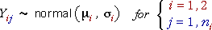

Hypotheses
We now consider how the sums of squares for the model

can be used to test whether the standard deviations in the two groups are the same:
Sums of squares
The hypotheses are assessed using the sums of squares that were previously defined:
If the null hypothesis is true (the standard deviations are equal), the sums of squares within group 1 and within group 2 both have chi-squared distributions involving the same population variance, σ2.


F ratio
Using the analysis of variance approach, the ratio of the two mean sums of squares within the groups has an F distribution,
Equivalence to previous test
The two mean sums of squares are the sample variance within the two groups, so the F ratio is identical to the one that we used earlier to test whether the group standard deviations were the same,

Obtaining the p-value and conclusion for the test are therefore identical to the method described earlier.
The analyis of variance approach simply presents the calculations for the F ratio in a different way.
Simulation demonstrating the distribution of F
The diagram below takes samples from a normal model in which the two group variances are equal (so the null hypothesis holds). The sample sizes in the two groups are n1 = 20 and n2 = 7.
The green F value is the ratio of the mean sums of squares within group 1 and within group 2. This is also the ratio of the sample variances in the two groups.
Click Accumulate and then take several samples. Observe that the F ratio has a distribution that is consistent with the theoretical F distribution since the null hypothesis holds.